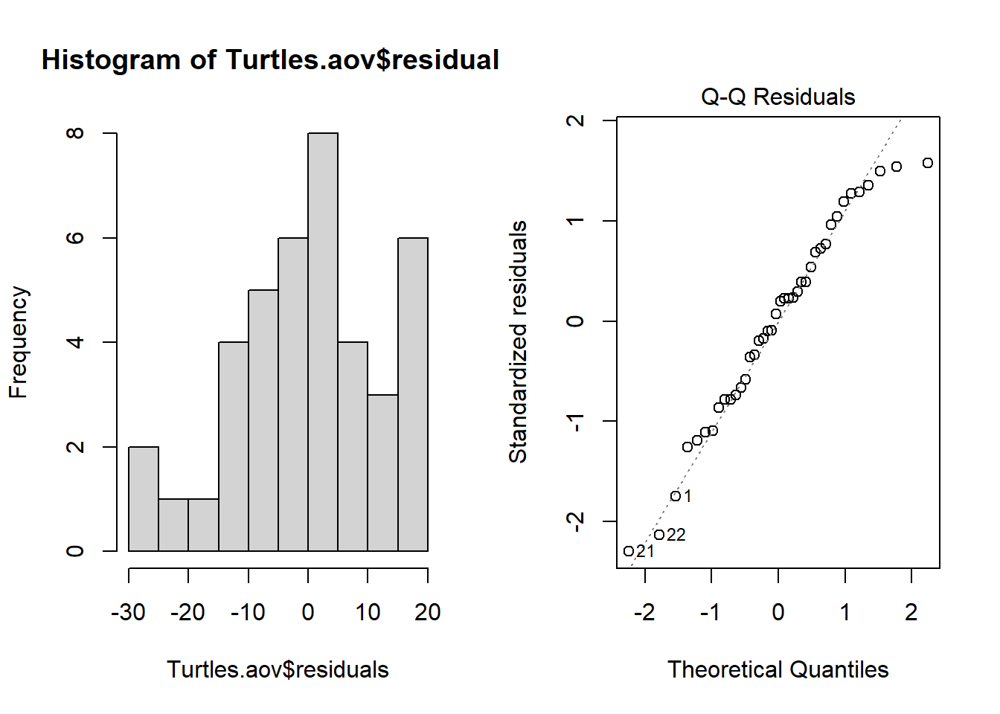
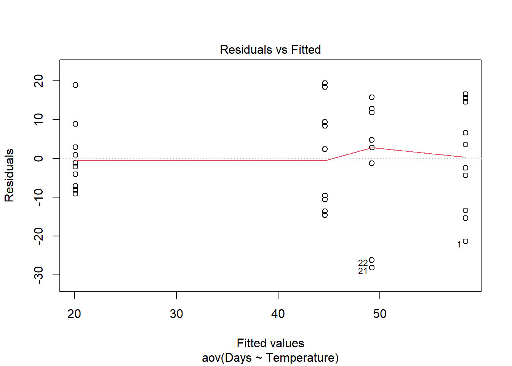
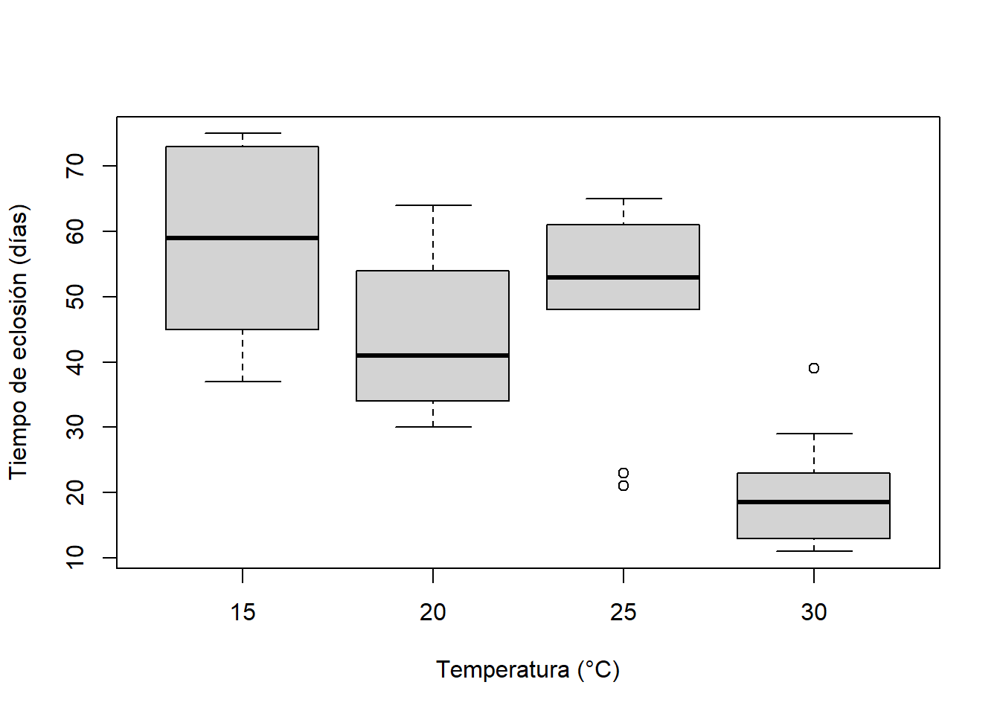

Turtles <- read.csv(file = "Turtles.csv", header = TRUE)
str(Turtles)ANOVA de un solo factor
El análisis de varianza (ANOVA) es una de las técnicas más utilizadas en las ciencias biológicas y ambientales. El ANOVA se utiliza para contrastar una variable dependiente continua y en diferentes niveles de una o más variables independientes categóricas x. Las variables independientes se denominan factor o tratamiento, y las diferentes categorías dentro de ese tratamiento se denominan niveles. En este módulo, comenzaremos con el diseño más simple, aquellos con un solo factor.
Cuando se desean comparar las medias de grupo entre dos niveles, se utiliza una prueba t-test independiente. El ANOVA se utiliza para comparar las medias de grupo cuando hay más de dos niveles o cuando hay más de dos variables predictoras (ver ANOVA: factorial). La lógica de esta prueba es esencialmente la misma que la prueba t-test-independiente: compara la variación entre grupos con la variación dentro de los grupos para determinar si las diferencias observadas se deben al azar o no.
Por ejemplo, para contrastar los tiempos de eclosión de los huevos de tortuga incubados a cuatro temperaturas diferentes (15°C, 20°C, 25°C y 30°C), el tiempo de eclosión es la variable de respuesta continua y la temperatura es la variable predictora categórica con cuatro niveles. La hipótesis nula sería que el tiempo medio de eclosión es igual para todas las temperaturas (Ho: \(\mu_{15} = \mu_{20} = \mu_{25} = \mu_{30}\)).
Cabe destacar que un ANOVA es un modelo lineal, al igual que la regresión lineal, excepto que las variables predictoras son categóricas en lugar de continuas.
\[y_{ij} = \mu + \alpha_i + \varepsilon_{ij}\]
donde \(\mu\) es la media general y \(\alpha_i\) es el efecto del i-ésimo grupo.
Es lo mismo que una regresión lineal múltiple con una variable predictora para cada nivel de la variable categórica (cada una codificada como una variable ficticia). Para la pregunta de si el tiempo de eclosión de las tortugas difiere entre las cuatro temperaturas de incubación, debemos ajustar cuatro parámetros para describir la respuesta media de cada temperatura (en lugar de solo una intercepción y una pendiente en una regresión lineal simple). Para este ejemplo, nuestra ecuación del modelo lineal tendrá esta forma:
\[TiempoDeEclosion = \mu + \beta_1.Temp_{15} + \beta_2.Temp_{20} + \beta_3.Temp_{25} + \beta_4.Temp_{30} + \varepsilon\]
El ANOVA descompone la varianza total en un componente que puede explicarse por la variable predictora (entre los niveles del tratamiento) y un componente que no puede explicarse (dentro de los niveles, la varianza residual). El estadístico de prueba, F, es la razón de estas dos fuentes de variación.
\[F = \frac{MS_{entre}}{MS_{dentro}}\]
donde MS son los cuadrados medios, una medida de variación. La probabilidad de obtener el valor observado de F se calcula a partir de la conocida distribución de probabilidad de F, con dos grados de libertad (uno para el numerador = el número de niveles - 1) y uno para el denominador (número de réplicas por nivel - 1 x número de niveles).
Ejecutando el análisis
Los datos deben estar formateados de tal manera que las réplicas individuales sean filas y las variables sean columnas separadas. Incluye una columna para la variable dependiente, y, y una columna correspondiente para la variable categórica, x. Descarga el conjunto de datos de muestra para el ejemplo de eclosión de tortugas, Turtles.csv, impórtalo en R y verifica que la variable de temperatura sea un factor con la función str.
En este caso, debido a que tenemos números para los cuatro niveles del tratamiento de Temperatura, necesitamos cambiar esa variable para que se convierta en un factor en lugar de un número entero.
Turtles$Temperature <- factor(Turtles$Temperature)Ahora podemos ejecutar el análisis de varianza que contrasta el tiempo de eclosión (días) en diferentes temperaturas utilizando la función aov. Los argumentos de la función son simplemente una declaración de fórmula, y~x, donde la variable de respuesta se encuentra a la izquierda de ~, la variable predictora a la derecha y algún código para especificar qué marco de datos contiene esas variables.
Turtles.aov <- aov(Days ~ Temperature, data = Turtles)La salida de este análisis se puede ver utilizando la función summary en el objeto creado.
summary(Turtles.aov)Exactamente el mismo análisis se puede reproducir utilizando la función de modelo lineal lm.
Turtles.lm <- lm(Days ~ Temperature, data = Turtles)
summary(Turtles.lm)Interpretación de los resultados
Df Sum Sq Mean Sq F value Pr(>F)
Temperature 3 8025 2675.2 15.98 9.08e-07 ***
Residuals 36 6027 167.4
---
Signif. codes: 0 '***' 0.001 '**' 0.01 '*' 0.05 '.' 0.1 ' ' 1La salida resumida de un objeto ANOVA es una tabla con los grados de libertad (Df), sumas de cuadrados (Sum Sq), cuadrados medios (Mean Sq) para la variable predictora (es decir, la variación entre los niveles de tu tratamiento) y para los residuos (es decir, la variación dentro de los niveles). También se presentan la estadística de prueba, el valor F y su valor p asociado (Pr(>F)).
Primero verifica los grados de libertad. Los grados de libertad del factor Df = el número de niveles de tu factor - 1. Los grados de libertad residuales Df = a(n-1), donde : a es el número de niveles de tu factor y n es el tamaño de la muestra (repeticiones por nivel).
Las sumas de cuadrados y los cuadrados medios son medidas de variación. La estadística F es la relación entre MSentre y MSdentro y el valor p es la probabilidad del valor F observado a partir de la distribución F (con los grados de libertad dados).
Lo principal a tener en cuenta en la tabla de ANOVA es si tu variable predictora tuvo un efecto significativo en tu variable de respuesta. En este ejemplo, la probabilidad de que las cuatro temperaturas de incubación sean iguales es <0.001. Esto es muy poco probable y mucho menos que 0.05. Concluiríamos que hay una diferencia en los tiempos de eclosión entre las temperaturas. También nos interesa el valor de R^2, que nos indica cuánta variación fue explicada por el modelo.
Si utilizas la función lm, obtienes un poco más de información en el resumen de la salida del modelo lineal.
Call:
lm(formula = Days ~ Temperature, data = Turtles)
Residuals:
Min 1Q Median 3Q Max
-28.200 -9.225 1.650 9.025 19.400
Coefficients:
Estimate Std. Error t value Pr(>|t|)
(Intercept) 58.400 4.092 14.273 < 2e-16 ***
Temperature20 -13.800 5.787 -2.385 0.0225 *
Temperature25 -9.200 5.787 -1.590 0.1206
Temperature30 -38.300 5.787 -6.619 1.04e-07 ***
---
Signif. codes: 0 '***' 0.001 '**' 0.01 '*' 0.05 '.' 0.1 ' ' 1
Residual standard error: 12.94 on 36 degrees of freedom
Multiple R-squared: 0.5711, Adjusted R-squared: 0.5354
F-statistic: 15.98 on 3 and 36 DF, p-value: 9.082e-07La salida para la tabla de ANOVA estándar se encuentra al final y, encima de ella, obtienes los estimados de parámetros reales del modelo lineal (los \(\beta_1\), \(\beta_2\), etc. de arriba). En este ejemplo, las tortugas a 15°C eclosionaron después de 58.4 días, en promedio (la intercepción en el modelo). Los otros estimados de parámetros son las diferencias entre cada nivel de temperatura y la intercepción. Por ejemplo, a 20°C fueron 13.8 días más rápidas (es decir, la media para 20°C = 58.4-13.8 = 44.6 días).
Si detectas alguna diferencia significativa en el ANOVA, nos interesa saber exactamente qué grupos difieren entre sí y cuáles no. Recuerda que un valor p significativo en la prueba que acabas de realizar rechazaría la hipótesis nula de que las medias de la variable dependiente son iguales en todos los grupos, pero no identificaría cuáles son diferentes entre sí. Para ver una comparación entre cada media y cada otra media, podemos utilizar una prueba post hoc de Tukey.
TukeyHSD(Turtles.aov) Tukey multiple comparisons of means
95% family-wise confidence level
Fit: aov(formula = Days ~ Temperature, data = Turtles)
$Temperature
diff lwr upr p adj
20-15 -13.8 -29.38469 1.784689 0.0982694
25-15 -9.2 -24.78469 6.384689 0.3969971
30-15 -38.3 -53.88469 -22.715311 0.0000006
25-20 4.6 -10.98469 20.184689 0.8562615
30-20 -24.5 -40.08469 -8.915311 0.0008384
30-25 -29.1 -44.68469 -13.515311 0.0000785Supuestos a verificar
Los supuestos importantes del ANOVA son la independencia, la homogeneidad de varianza y la normalidad. Recomendamos una evaluación cualitativa de los supuestos de normalidad y homogeneidad de varianza, examinando los patrones de variación en los residuos, en lugar de realizar una prueba formal como la prueba de Cochran. En general, los modelos lineales son bastante “robustos” frente a la violación de estos supuestos (heterogeneidad y normalidad), dentro de ciertos límites.
Normalidad. El supuesto de normalidad se puede verificar mediante un histograma de frecuencias de los residuos o mediante el uso de un gráfico de cuantiles en el que los residuos se trazan frente a los valores esperados de una distribución normal. El histograma de residuos debería seguir una distribución normal. Si los puntos en el gráfico de cuantiles se encuentran principalmente en la línea, los residuos tienen una distribución normal. Ambos gráficos se pueden obtener a partir del objeto de modelo creado por la función aov.
par(mfrow = c(1, 2))
hist(Turtles.aov$residuals)
plot(Turtles.aov, which = 2)
Violaciones de la normalidad se pueden solucionar mediante transformaciones o mediante el uso de una distribución de error diferente en un modelo lineal generalizado (GLM).
Homogeneidad de varianza. La suposición de homogeneidad de varianza, es decir, que la variación en los residuos sea aproximadamente igual en todo el rango de la variable predictora, se puede verificar trazando los residuos contra los valores ajustados del objeto de modelo aov.
plot(Turtles.aov, which = 1)
Varianzas heterogéneas se identifican por un patrón no aleatorio en el gráfico de residuos versus valores ajustados. Busca una distribución uniforme de los residuos en el eje y para cada uno de los niveles en el eje x. Un distribución en forma de abanico con mayor varianza en valores más altos del eje x es un problema común cuando los datos están sesgados. Consulta el módulo de pruebas de suposiciones de modelos lineales para obtener más información. Si hay patrones fuertes, una solución potencial es transformar la variable de respuesta y. Si esto no soluciona el problema, la mejor solución es usar una distribución de error diferente en un modelo lineal generalizado (GLM).
Independencia. El ANOVA asume que todas las medidas replicadas son independientes entre sí (es decir, igualmente probables de ser muestreadas de la población de posibles valores para cada nivel). Este problema debe considerarse en la etapa de diseño. Si los datos están agrupados de alguna manera (por ejemplo, la mitad de los huevos de tortuga medidos en un momento y la otra mitad medidos más tarde), entonces se necesitan diseños más complejos para tener en cuenta factores adicionales (por ejemplo, un diseño con temperatura y tiempo como factores).
Existen diversas medidas para tratar la no independencia. Estas incluyen asegurarse de que todos los predictores importantes estén en el modelo, promediar las observaciones anidadas o utilizar un modelo mixto.
Comunicación de los resultados
Escrita. Los resultados de un ANOVA de un factor se expresan generalmente en texto como una frase corta, por ejemplo: “El tiempo de eclosión de las tortugas difirió entre las cuatro temperaturas de incubación (F = 15.98, gl = 3,36, p < 0.001)”. Un efecto significativo sería seguido de una descripción escrita de los resultados de las pruebas post hoc (es decir, qué temperaturas difirieron de cuáles). Los resultados de las pruebas post hoc también se pueden agregar a la figura (por ejemplo, mediante la incorporación de etiquetas de los niveles que difieren).
Visual. Un diagrama de caja o un gráfico de columnas con barras de error son adecuados para comparar una variable continua entre niveles de una variable categórica. Consulta la ayuda de gráficos para obtener versiones listas para su publicación de estas figuras.
boxplot(Days ~ Temperature, data = Turtles, ylab = "Tiempo de eclosión (días)", xlab = "Temperatura (°C)")
Más ayuda
Escribe ?aov o ?lm para obtener la ayuda de R sobre estas funciones.
Quinn y Keough (2002) Experimental design and data analysis for biologists. Cambridge University Press. Capítulo 8: Comparación de grupos o tratamientos - análisis de varianza.
McKillup (2012) Statistics explained. An introductory guide for life scientists. Cambridge University Press. Capítulo 11: Análisis de varianza de un solo factor.
Underwood, AJ (1997) Experiments in ecology: Their logical design and interpretation using analysis of variance. Cambridge University Press.
Autor: James Lavender
Año: 2016
Última actualización: Nov. 2023